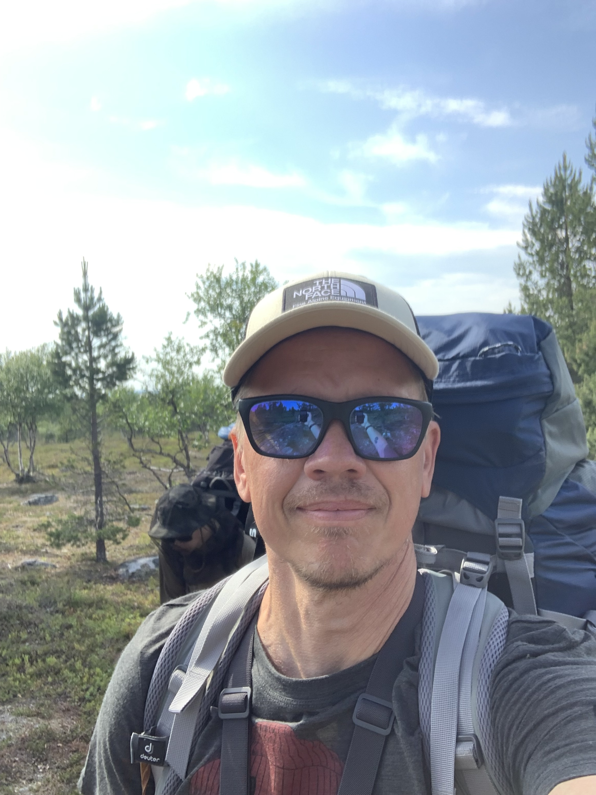

Olen liikkunut luonnossa yli neljäkymmentä vuotta. Nyt haluan auttaa muita löytämään saman rauhan.

Opettaja, erä- ja luonto-opas, luontoihminen
Olen taustaltani luokanopettaja ja toiminut siinä ammatissa lähes kaksikymmentä vuotta. Minulla on terveystiedon aineenopettajan pätevyys ja olen erikoistunut myös liikunnan opettamiseen. Tällä hetkellä opetan ammatillisessa oppilaitoksessa digitaitoja nuorille ja aikuisille.
Työssäni ja vapaa-ajalla olen nähnyt digimurroksen ja älylaitteiden vaikutuksen lapsiin ja nuoriin. Valinnaiskursseja luonnossa vetäessäni olen huomannut luonnon rauhoittavan vaikutuksen lapsiin — ja saman vaikutuksen olen huomannut myös itsessäni.
Luontorakkauden vuoksi opiskelin työn ohessa erä- ja luonto-oppaaksi Savon ammattiopistosta. Haluan kaiken digihömpän keskellä tarjota myös muille mahdollisimman tärkeitä ja vaikuttavia luontoelämyksiä.
Kokemusta luonnosta, ihmisistä ja ryhmien ohjaamisesta.
Savon ammattiopisto — suoritettu työn ohessa
Lähes 20 vuoden kokemus opettamisesta ja ryhmien ohjaamisesta
Terveystiedon aineenopettajan pätevyys, erikoistunut liikunnan opettamiseen
Trail- ja maantiejuoksu, pyöräily, vaellus — ympäri Suomea ja Skandinaviaa
Retkittäin tarjoaa vinkkejä, inspiraatiota ja konkreettisia työkaluja retkeilyyn.
Luontoon ei tarvita erikoisvarusteita tai suuria suunnitelmia. Lähipuisto riittää.
Luonto rauhoittaa — sen olen nähnyt sekä lapsissa että aikuisissa. Se on tieteellinen fakta ja oma kokemukseni.
Jokamiehenoikeus on suomalainen aarre. Autan sinua hyödyntämään sen.
Haluatko ohjatun luontoelämyksen, kysyä kursseista
tai tehdä yhteistyötä?